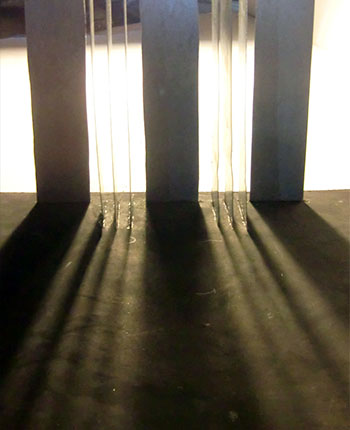

Umeå School of Architecture
2nd semester/spring 2012
Material workshop
Material poetry
Material workshop where my group worked with different kinds of reflections depending on the material of the floor and columns.
Group members
Johanna Boström, Anna Carlsson, Maxine Lundström, Gustaf Ridderström and Fritjof Kyander
